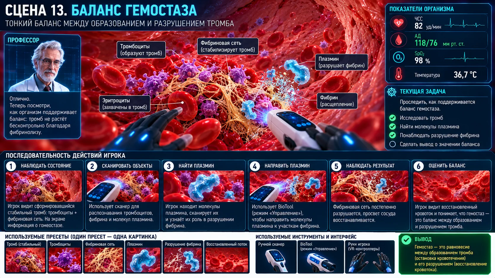

Scene 13 · ≈ 1–2 мин
Баланс гемостаза
Научить, что гемостаз должен быть достаточным, но не перекрывать сосуд.

Сценарная последовательность
Показать шкалу гемостаза
Недостаточно: кровь выходит
Оптимум: дефект закрыт, поток сохранён
Избыточно: тромб сужает просвет
Зафиксировать оптимум
Технические требования сцены
- Баланс гемостаза управляет степенью заполнения дефекта.
- Избыточное состояние физически уменьшает свободный просвет.
- Победа только при одновременно закрытом дефекте и сохранённом потоке.